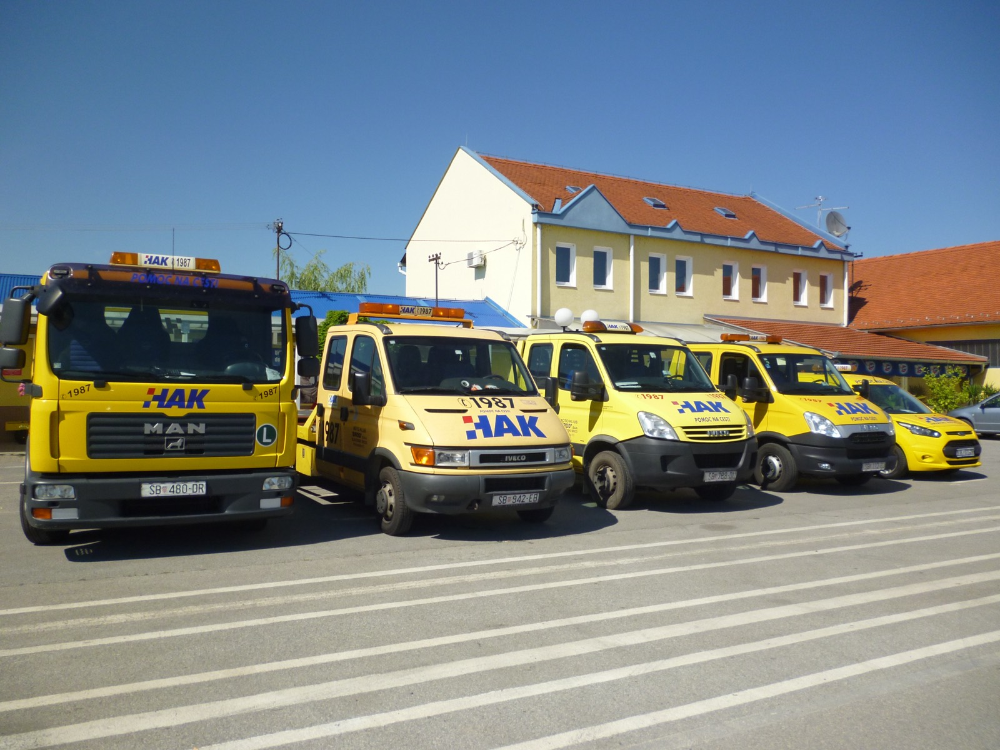
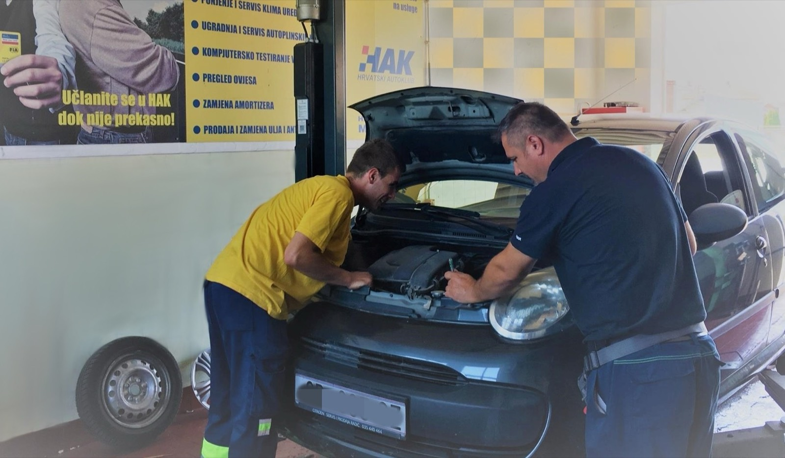
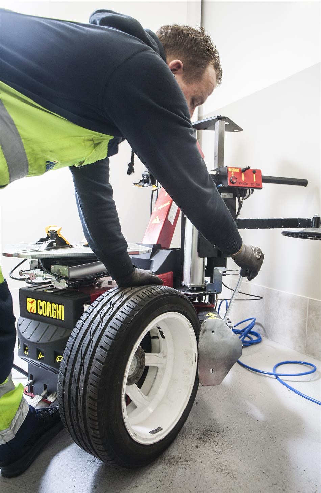
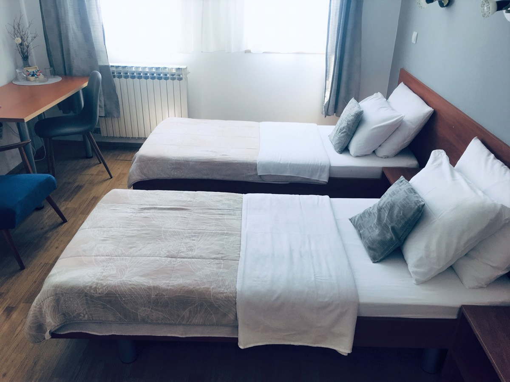
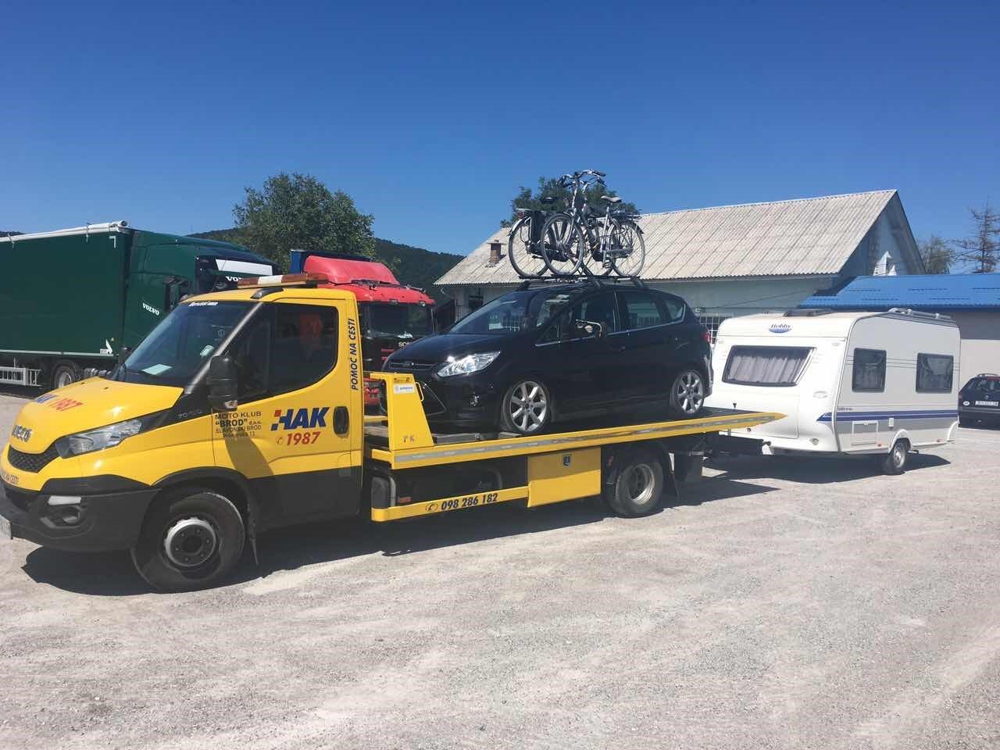
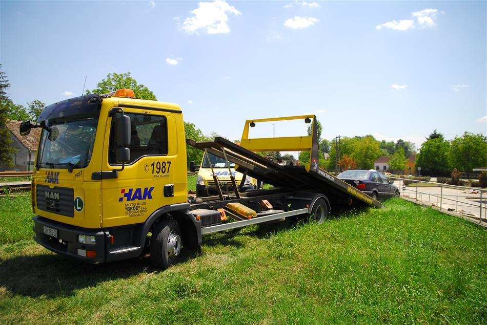

Servis zasve tipovevozila.
Dijagnostika, testiranje amortizera i kočnica, montaža guma, punjenje klime, snimanje trapa i popravci motora – sve na jednom mjestu, u radionici od 300 m² u Primorskoj 13.

Sve potrebno rješavamo.
Želite testirati vozilo na dijagnostici, provjeriti amortizere, kočnice ili motor, promijeniti gume ili napuniti klimu? Evo što radimo u našoj radionici.
- 01
Dijagnostika kvara
Računalna dijagnostika vozila i pronalaženje uzroka kvara.
- 02
Kontrolni pregled
Pregled i testiranje rada motora i svjetala.
- 03
Gume
Montaža, demontaža i balansiranje guma, popravak gume.
- 04
Automehanika
Automehaničarski radovi na osobnim, kombi i teretnim vozilima.
- 05
Mali servis
Izmjena ulja u motoru i filtera.
- 06
Veliki servis
Zamjena remenja.
- 07
Popravci motora
Pregled i popravak motora te rashladnog sustava.
- 08
Kočioni sustav
Popravak kočionog sustava, zamjena kočnica.
- 09
Mjenjač i kvačilo
Popravak mjenjača i zamjena seta kvačila.
- 10
Optika kotača
Geometrija kotača – kontrola i podešavanje.
- 11
Punjenje klime
Kontrola i punjenje klima uređaja u vozilu.
- 12
Snimanje trapa
Provjera ovjesa i trapa vozila.
- 13
Amortizeri
Testiranje i zamjena amortizera.
- 14
Ostali popravci
I sve ostalo što vašem vozilu treba – pitajte nas.

Radionica · 300 m²Iskustvo naših djelatnika.
Stručnost, profesionalnost i iskustvo naših automehaničara jamstvo su kvalitete usluge. Kod nas možete računati i na povoljnu nabavu i ugradnju novih ili rezervnih dijelova vrhunske kvalitete.
Ako uočimo dodatne nedostatke kojih možda niste bili svjesni, upozorit ćemo vas i savjetovati što učiniti.
- 4 automehaničara i 300 m² radioničkog prostora
- Pokretna radionica – interventno vozilo za otklon kvarova na cesti
- Poslijepodnevni popravci po dogovoru
Članstvo se isplati u servisu.
Članstvo u HAK AK Marsonia jednako je članstvu u HAK-u. Uz pomoć na cesti, članovi u našem servisu dobivaju besplatne usluge i popuste.
Pregled ili mali servis
Kompletan pregled i testiranje vozila (rad motora i svjetala) i/ili mali servis – izmjena ulja i filtera.
Izmjena guma
Montaža, demontaža i balansiranje guma, ovisno o modelu članstva. Utezi se naplaćuju po potrebi.
Popravci i dijelovi
Popusti na izvršenu uslugu popravka vozila i na ugrađene dijelove za naše članove.
Niste član? Izmjenu guma, kontrolne preglede i male servise radimo i za sve ostale, uz naknadu prema cjeniku.

Vaše gume čuvamo do iduće sezone.
Ostavite ljetne ili zimske gume kod nas, s naplatcima ili bez. Pri izmjeni su spremne u servisu – bez nošenja i bez mjesta u garaži.
(najviše 7 mjeseci), PDV uključen
Zimska oprema u Hrvatskoj je obvezna na zimskim dionicama javnih cesta od 15. studenoga do 15. travnja. U sezoni izmjene guma naručite se što ranije i izbjegnite gužve i čekanje.
Kvar ili nezgoda? Dolazimo 0–24.
Svakim danom, od 0 do 24 sata, 365 dana u godini. Pomoći ćemo vam osposobiti vozilo za vožnju ili ga, ako je potrebno, prevesti do našeg ili najbližeg servisa – putovali vi po Hrvatskoj ili inozemstvu, poslovno ili privatno.
Naše usluge na cesti
- Dijagnoza kvara, startanje motora
- Popravak i otklon kvara na licu mjesta
- Istakanje i zbrinjavanje pogrešno utočenog goriva
- Otvaranje zaključanog vozila
- Prijevoz vozila u kvaru i oštećenih vozila
- Zamjena kotača
- Izvlačenje vozila na cestu
- Prijevoz putnika i ostali prijevozi
Vozila i ekipa
Ovlašteni smo za međunarodni prijevoz vozila i putnika. Članovi HAK-a pojedine usluge koriste besplatno, prema uvjetima članstva.

Auto u kvaru? Prenoćite kod nas.
Sobe s vlastitom kupaonicom, mjesto za kampere i kamp prikolice te čuvano parkiralište, uz recepciju 0–24. Cijena smještaja na upit.
Žuta flota iz Primorske 13.
Povucite vodoravno za još fotografija.


Prije nego nazovete.
Kako se naručiti na servis ili izmjenu guma?
Nazovite 035 272 935 ili pošaljite e-mail na ak-marsonia@hak.hr. U sezoni izmjene guma naručite se što ranije kako biste izbjegli gužve i čekanje.
Kada radi servis?
Radnim danom od 8 do 16 h, subotom od 8 do 13 h (osim u sezoni izmjene guma). Poslijepodnevni popravci su mogući po dogovoru, a za brze otklone kvarova dostupni smo 0–24.
Što članovi HAK-a dobivaju besplatno?
Kompletan pregled i testiranje vozila (rad motora i svjetala) i/ili mali servis (izmjena ulja i filtera) te montažu, demontažu i balansiranje guma dva puta godišnje, ovisno o modelu članstva (utezi se naplaćuju po potrebi). Uz to imaju popuste na popravke i ugrađene dijelove.
Koliko košta čuvanje guma?
30,00 EUR za četiri gume, s naplatcima ili bez, za jednu sezonu (najviše 7 mjeseci). Plaća se kod predaje guma, PDV je uključen.
Što ako mi se auto pokvari na cesti?
Služba pomoći na cesti radi 0–24 sata, 365 dana u godini. Zovite HAK AK Marsonia na 035 272 935 ili HAK na 1987 (iz inozemstva +385 1 1987).
Servisirate li i kombije i teretna vozila?
Da. Servisiramo sve tipove vozila, a cjenik ima zasebnu cijenu radnog sata za kombi i teretna vozila.
Dogovorimo termin.
Sve informacije i narudžbe na telefon. Ako nas ne možete dobiti, pošaljite e-mail – javit ćemo se.
- Informacije i narudžbe035 272 935
- E-mailak-marsonia@hak.hr
- AdresaPrimorska 13, 35000 Slavonski Brod
- Radno vrijeme servisaPon–pet 8–16 h · sub 8–13 h
(subota osim u sezoni izmjene guma) · pomoć na cesti 0–24